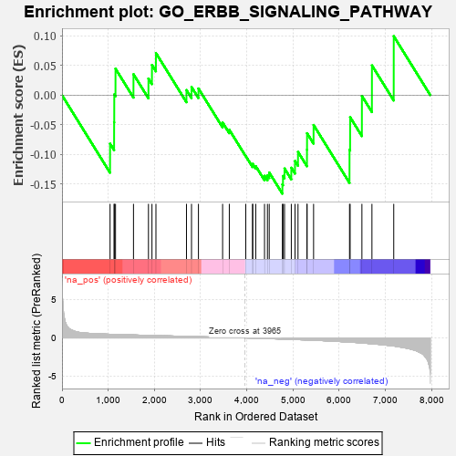
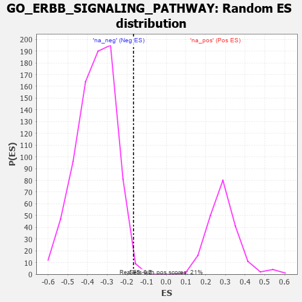

| | | Dataset | 7d |
| Phenotype | NoPhenotypeAvailable |
| Upregulated in class | na_neg |
| GeneSet | GO_ERBB_SIGNALING_PATHWAY |
| Enrichment Score (ES) | -0.16640355 |
| Normalized Enrichment Score (NES) | -0.46361706 |
| Nominal p-value | 0.9949622 |
| FDR q-value | 1.0 |
| FWER p-Value | 1.0 |
Table: GSEA Results Summary

Fig 1: Enrichment plot: GO_ERBB_SIGNALING_PATHWAY
Profile of the Running ES Score & Positions of GeneSet Members on the Rank Ordered List
| PROBE | GENE SYMBOL | GENE_TITLE | RANK IN GENE LIST | RANK METRIC SCORE | RUNNING ES | CORE ENRICHMENT | | 1 | AKT1 | | | 1040 | 0.476 | -0.0820 | No |
| 2 | SRC | | | 1128 | 0.459 | -0.0457 | No |
| 3 | NCK2 | | | 1131 | 0.458 | 0.0013 | No |
| 4 | GAB1 | | | 1158 | 0.453 | 0.0447 | No |
| 5 | SOS1 | | | 1547 | 0.384 | 0.0353 | No |
| 6 | NUP62 | | | 1871 | 0.324 | 0.0280 | No |
| 7 | CUL5 | | | 1947 | 0.314 | 0.0509 | No |
| 8 | VPS25 | | | 2033 | 0.300 | 0.0712 | No |
| 9 | ZGPAT | | | 2694 | 0.200 | 0.0086 | No |
| 10 | FER | | | 2803 | 0.183 | 0.0139 | No |
| 11 | SOCS4 | | | 2953 | 0.157 | 0.0113 | No |
| 12 | HGS | | | 3476 | 0.080 | -0.0462 | No |
| 13 | CBL | | | 3621 | 0.056 | -0.0585 | No |
| 14 | CHMP6 | | | 3977 | -0.003 | -0.1029 | No |
| 15 | ABL1 | | | 4125 | -0.027 | -0.1187 | No |
| 16 | PLCE1 | | | 4127 | -0.028 | -0.1159 | No |
| 17 | STAM2 | | | 4193 | -0.041 | -0.1199 | No |
| 18 | ARF4 | | | 4383 | -0.073 | -0.1362 | No |
| 19 | CDC37 | | | 4446 | -0.084 | -0.1353 | No |
| 20 | HIP1 | | | 4485 | -0.092 | -0.1306 | No |
| 21 | PLCG1 | | | 4770 | -0.151 | -0.1508 | Yes |
| 22 | RTN4 | | | 4783 | -0.154 | -0.1364 | Yes |
| 23 | FBXW7 | | | 4816 | -0.161 | -0.1238 | Yes |
| 24 | ARAP1 | | | 4963 | -0.191 | -0.1225 | Yes |
| 25 | PDPK1 | | | 5043 | -0.207 | -0.1112 | Yes |
| 26 | MMP9 | | | 5108 | -0.227 | -0.0958 | Yes |
| 27 | RAB7A | | | 5302 | -0.271 | -0.0922 | Yes |
| 28 | EPN1 | | | 5304 | -0.272 | -0.0642 | Yes |
| 29 | CBLB | | | 5445 | -0.306 | -0.0503 | Yes |
| 30 | MVP | | | 6223 | -0.543 | -0.0922 | Yes |
| 31 | CDC42 | | | 6236 | -0.548 | -0.0372 | Yes |
| 32 | WDR54 | | | 6491 | -0.658 | -0.0014 | Yes |
| 33 | EGFR | | | 6708 | -0.765 | 0.0503 | Yes |
| 34 | PTPRJ | | | 7180 | -1.054 | 0.0996 | Yes |
Table: GSEA details [plain text format]

Fig 2: GO_ERBB_SIGNALING_PATHWAY: Random ES distribution
Gene set null distribution of ES for GO_ERBB_SIGNALING_PATHWAY